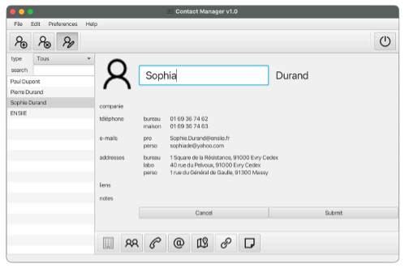

Tech Projects
House pricing prediction
- Data cleaning and preprocessing on categorical and numerical variables
- Creation of new features (e.g., TotalArea, TotalBaths, binary flags for fireplaces, pools, etc.)
- Handling of missing values using neighborhood-specific imputation or default values
- Box-Cox transformation and RobustScaler used to normalize skewed distributions
- Feature selection based on correlation matrix and XGBoost feature importance
- Training of several regression models (Ridge, Lasso, SVR, Gradient Boosting, XGBoost, and LightGBM)
- Hyperparameter tuning using GridSearchCV and RandomizedSearchCV
- Implementation of model stacking with Ridge as the meta-model to combine base model predictions
- Final evaluation using RMSLE on Kaggle with a top 0.8% leaderboard ranking
Personal portfolio
- Designed and implemented using HTML & CSS
- Responsive layout optimized for both desktop and mobile
- Integration of GitHub repository links and optional project images
Board game
- Implementation in C of a 2D Tetris-like game
- Implementation in Python of a 3D game
- Mathematical research documents on these games
- Research activities on automatic game algorithms
Contact Management Software

- Application to manage contacts in an object-oriented language
Group classification using decision tree
- Classification algorithm for datasets using quaternary trees
- Research documents on model performance and complexity
Crowd simulation
- Use of Dijkstra and adaptation of A-star to manage people's behavior
- Development of a cellular automaton model
- Application to my high school and proposal to improve its emergency exits